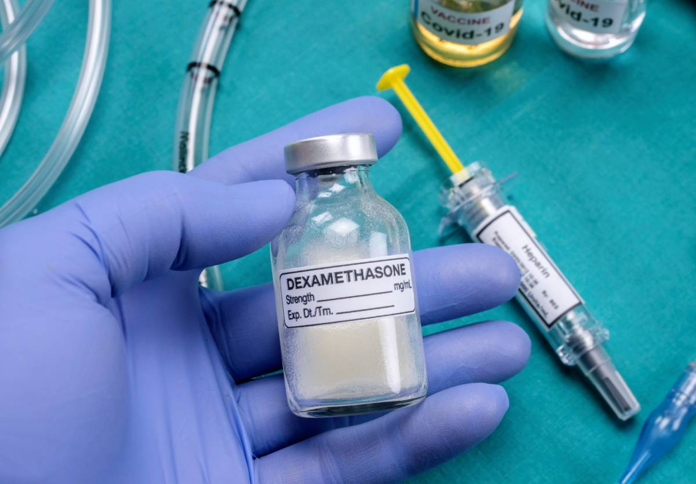

Dexamethasone is a potent corticosteroid used in the treatment of aggressive inflammation. Inflammation is present in many serious diseases, including cancers, autoimmune disorders, and infections. When inflammation is successfully treated, patients can experience marked improvement in prognosis and quality of life. Dexamethasone has many clinical uses, ranging from the treatment of asthma and severe allergies to reducing nausea and vomiting after anesthesia, and more.
Many studies have demonstrated that dexamethasone restores the integrity of epithelial barriers in different organs and tissues in instances of severe inflammation. While the mechanism of action is still being clarified, preliminary evidence shows that dexamethasone alters the immune cells in epithelial barriers to prevent entry of harmful substances that would compromise tissues or organs. This effect might underpin the variety of clinical uses of dexamethasone, as the drug mediates cell communication between immune cells and the growth factors that stimulate over-proliferation and migration in airway epithelia in chronic respiratory diseases like asthma.
Research by Grohmann et al. explores dexamethasone's mode of action through the activation of a critical immunoregulatory pathway involving the enzyme indoleamine 2,3-dioxygenase (IDO). This activation leverages enhanced tryptophan catabolism—a process crucial for mitigating inflammatory responses in allergic airway inflammation models such as asthma. Other research by Rahmawati et al. suggests that dexamethasone effectively mitigates IL-17A-induced epithelial barrier disruption, which is a critical factor in asthma pathology. By targeting the compromised barrier function, inflammation and airway hyperresponsiveness are reduced.
Dexamethasone's potent anti-inflammatory qualities, along with its anti-nausea and pain-relieving capacities, underscore its widespread use in oncological care. Inflammation is common in cancer patients, presenting as a symptom as well as a side effect of radiation therapy. A study by Saito et al. showed that high doses of systemic dexamethasone significantly lowered the incidence of oral mucositis in breast cancer patients receiving chemotherapy, from 53.5% to 27.3%. This reduction is crucial as oral mucositis not only diminishes quality of life but also compromises nutritional intake and increases risks for systemic infections.
However, this broad-spectrum anti-inflammatory action can be a double-edged sword. Long-term use of dexamethasone is associated with side effects such as metabolic dysregulation and increased susceptibility to infections due to its immunosuppressive properties. As such, careful patient monitoring is needed in each of dexamethasone's many clinical uses.
References
- Grohmann U et al. Reverse Signaling through GITR Ligand Enables Dexamethasone to Activate IDO in Allergy. Nature Medicine, vol. 13, no. 5, May 2007, pp. 579–586.
- Rahmawati SF et al. Function-specific IL-17A and Dexamethasone Interactions in Primary Human Airway Epithelial Cells. Scientific Reports, vol. 12, no. 1, 2022.
- Saito Y et al. Impact of systemic dexamethasone administration on oral mucositis induced by anthracycline-containing regimens in breast cancer treatment. Scientific Reports, 12(12587), 2022.
- Zhao H et al. Inflammation and tumor progression: signaling pathways and targeted intervention. Signal Transduction and Targeted Therapy, 6(263), 2021.